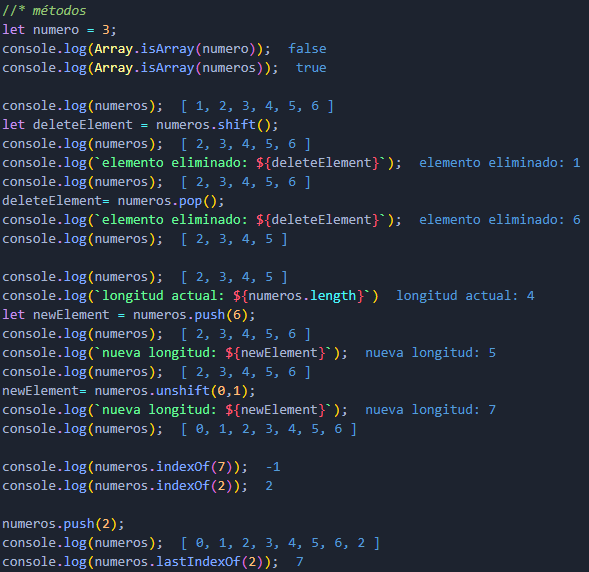
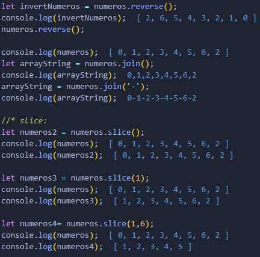
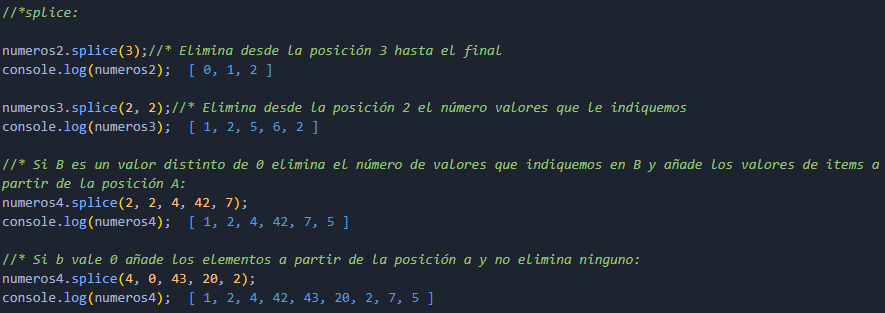
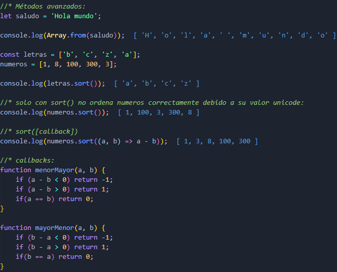
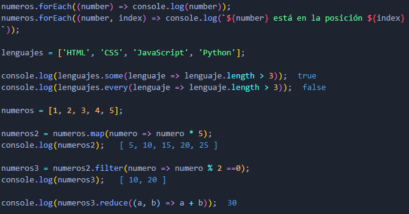
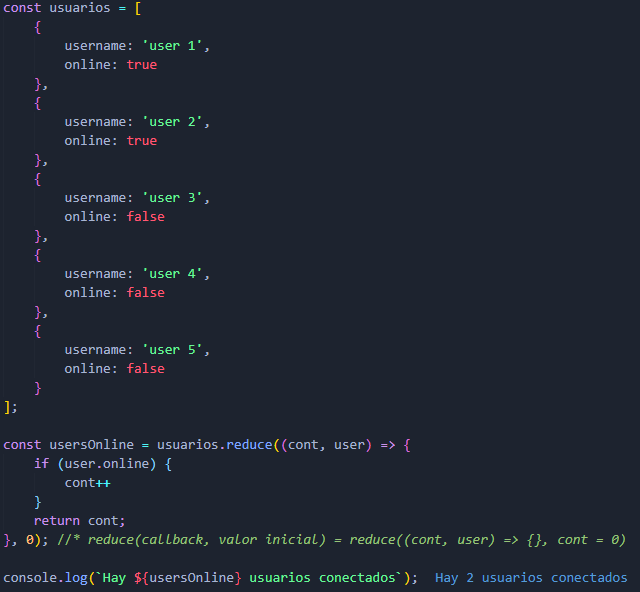

Arrays
Son estructuras que permiten almacenar varios datos y agruparlos.
- Se declaran con llaves cuadradas o corchetes [].
- Se pueden llenar con cualquier tipo de dato válido en JavaScript y deben ir separados por comas.
- Pueden declararse vacíos o con un contenido ya establecido.
- Pueden añadirse o eliminarse elementos en cualquier momento.
- Cada uno de sus elementos puede ser identificado por su índice, el cual comienza desde 0.
- Se pueden mezclar tipos de datos, pero no es recomendable.
Propiedades y Métodos:
Propiedades:
- length:
- devuelve el número de posiciones que contiene el array.
Métodos básicos:
- isArray(variable a evaluar):
- Devuelve true si la variable es un array.
- shift():
- Elimina el primer elemento del array y devuelve ese elemento.
- pop():
- Elimina el último elemento de un array y devuelve ese elemento.
- push(elemento1, elemento2,...):
- Añade uno o más elementos al final del array y devuelve la nueva longitud.
- unshift(elemento1, elemento2,...):
- Añade uno o más elementos al comienzo del array y devuelve la nueva longitud.
- indexOf():
- Devuelve el primer índice del elemento que coincida con el valor especificado, o -1 si ninguno es encontrado.
- lastIndexOf():
- Devuelve el último índice del elemento que coincida con el valor especificado, o -1 si ninguno es encontrado.
- reverse():
- Invierte el orden de los elementos del array.
- join('separador'):
- Devuelve un string con el separador que se le indique, por defecto son comas.
- slice(A, B):
- Extrae elementos de un array desde el índice A hasta el índice B. Si no existe B lo hace desde a hasta el final, si no existe ni A ni B hace una copia del original.
- splice(A, B, items):
- Cambia el contenido de un array eliminando elementos existentes y/o agregando nuevos elementos.
- A: Indice de inicio.
- B: Número de elementos.
- items: Elementos a añadir en el caso de que se añadan.



Métodos avanzados:
- from(x):
- Convierte en un array el elemento x el cual debe ser iterable.
- sort(callback):
- Ordena los elementos de un array alfabéticamente(valor Unicode), si se le pasa un callback los ordena en función del algoritmo que se le pase.
- forEach(callback(currentValue, index)):
- Ejecuta la función indicada una vez por cada elemento del array.
- some(callback):
- Comprueba si al menos un elemento del array cumple una condición.
- every(callback):
- Comprueba si todos los elementos del array cumplen una condición.
- map(callback):
- Transforma todos los elementos del array y devuelve un nuevo array.
- filter(callback):
- Filtra todos los elementos del array que cumplan la condición y devuelve un nuevo array.
- reduce(callback):
- Reduce todos los elementos del array a un único valor.


